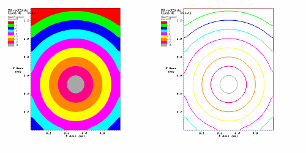

The Boundary plot's opacity can be changed globally as well as on a per material basis. To change material opacity, first select one or more materials in the list and move the opacity slider next to the color button. Moving the opacity slider to the left makes the selected materials more transparent and moving the slider to the right makes the selected materials more opaque. To change the entire plot's opacity globally, use the Opacity slider near the bottom of the window.
|  |
| Figure 9 |